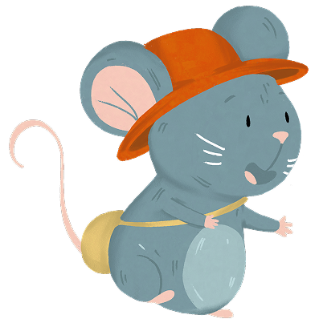

Mientras tanto, Pancho, a escondidas,
encuentra algo... un pedazo de pan.
Se acerca poco a poco, con cuidado.
encuentra algo... un pedazo de pan.
Se acerca poco a poco, con cuidado.
Está muy cerca.
Va a morderlo
Va a morderlo
